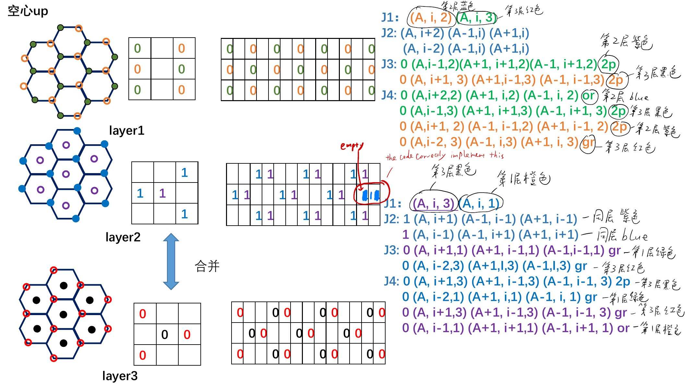

From sites to sums.
Follow one colored atom through distrib.m, its exchange or DMI neighbors, and the shifts in exchangej_.m or dmi.m. Every view below follows the same selection.
Explore the 3D unit-cell schematic · Complete guide & neighbor table · Notebook atlas
Current MATLAB implementation · PR #18. DMI reuses the J3/J4 neighbor sums with separate shell weights and alternating layer signs. J1/J2 have no DMI contribution. Masks, offsets, and embedded excerpts follow the merged code. Physical bond vectors and parameter provenance remain UNRESOLVED; see methodology and known issues. Notebook images remain historical records.
This is not an independent crystal reconstruction. Notebook box labels 0 / 1 are not code occupancy: atomtype_=1 means an atom is present. Positions below use unpadded (row r, column c, layer k).
DMI / J3 and J4 shell weights
Blue links: J3, weight (−1)kD3. Brown links: J4, weight −(−1)kD4. Atom colors retain their site meaning. An interior target has three J3 and six J4 neighbors. There is no unshifted J1 read. Surfaces and lateral padding omit absent neighbors exactly as in exchangej_.m.
S_D = (−1)^k (D3 S_J3 − D4 S_J4) [J] B_DMI = (S_D,y, −S_D,x, 0) / μs [T] W = diag((−1)^k) (D3 A3 − D4 A4) E_D = −xᵀ W y [J]
D3 = Dsim3 = 1.6e−23 J; D4 = Dsim4 = 1.28e−23 J. Both become zero when DMIenable=0; the view shows enabled defaults. A3/A4 are the implemented neighbor matrices; x/y are occupied-spin components. The energy expression is transcribed from dmi.m. Layer k increases opposite to physical z. The three-layer mask motif repeats with opposite DMI signs: inspect both k options for each color.
Labels show algebraic weights, not physical DMI-vector arrows. The old DMI-02 mismatch belongs to the superseded operator. The current code's physical shell assignments, directed vectors, and parameter provenance remain UNRESOLVED. Notebook page 8 records the J3/J4 idea, not evidence for the new weights or their signs.
Current parameter and field source
main.m · lines 43–51. The Fig. 3(b) comment is source text; its publication locator and estimate are not verified here.
integrate_llg.m · lines 174–182
01 / Neighbor schematic
Array offsets only; spacing and layer separation are schematic. Gold ring = target; numbered circles = neighbors; dashed circles = absent sites. Click a neighbor row below to highlight its path.
02 / Same positions in the arrays
Local window of a 9 × 17 × 6 core. Row/column labels are core indices; add two to each for padded MATLAB indices. Letters mark occupied sites; · is an empty core entry; gray × is padding. Dashed red outlines mark absent neighbor positions.
03 / Trace each neighbor into a shift
Select a row to highlight the same neighbor in both diagrams and its variable in the source. Layer index i in MATLAB corresponds to k here.
| Select | Neighbor color | Shell / weight | Core (r,c,k) | Offset (Δr,Δc,Δk) | Read at target | Contribution |
|---|
04 / Current implementation
Where the shell neighbors come from
Why the signs reverse
shifted = circshift(spins,[dr,dc]); shifted(r,c,k) = spins(r-dr,c-dc,k); % with wrapping of the allocated array
A positive column shift gathers the neighbor at c−1. Shift definitions are in integrate_llg.m, lines 95–133.
Source excerpts are embedded snapshots so this page works offline. For each term, the actual implementation repeats the sum for x, y, and z. The complete guide lists their line ranges.
Compare with the original structure and annotations —
Open original PDF